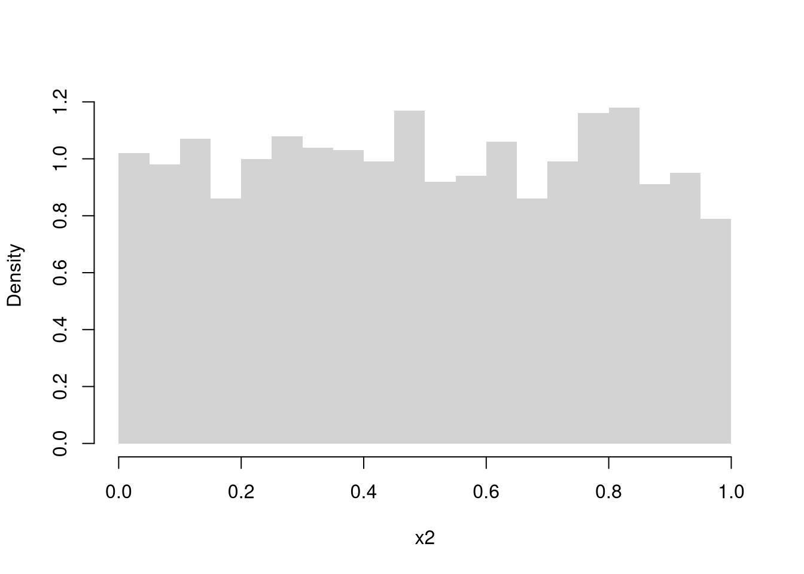
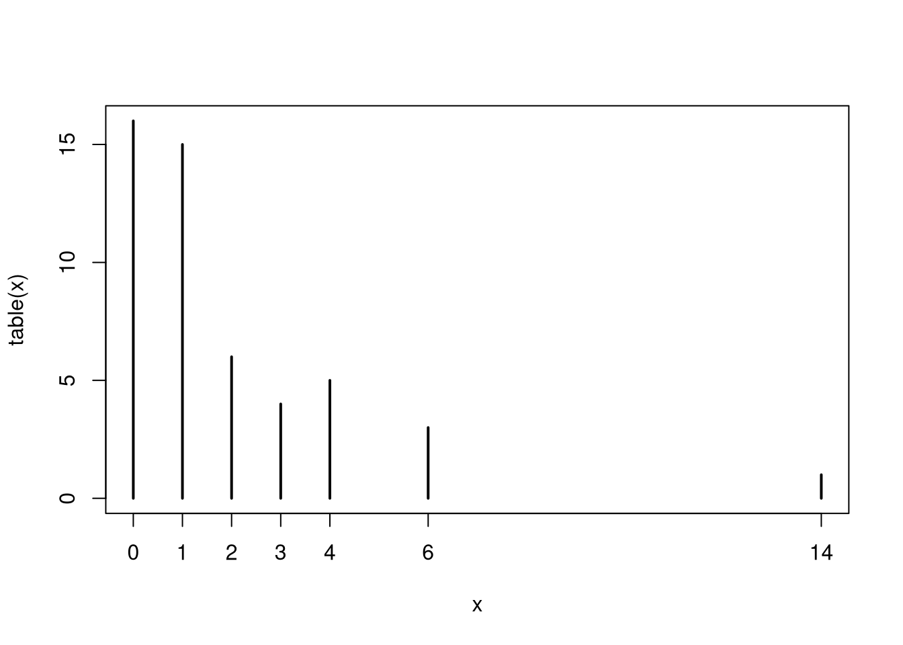
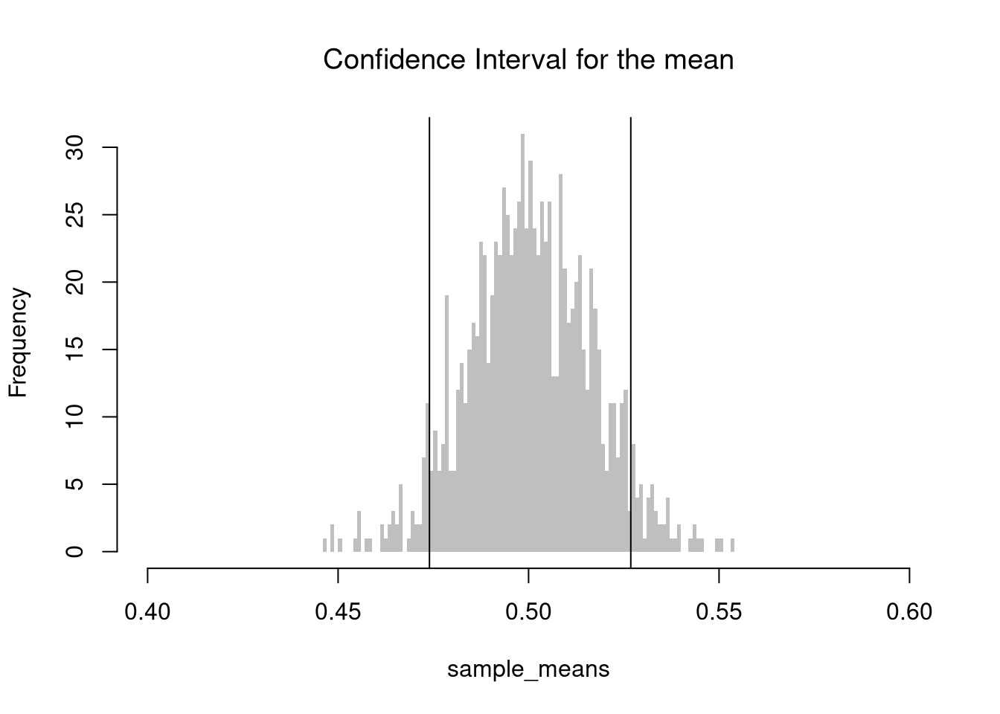

5 Statistics
We often summarize distributions with statistics: functions of data. The most basic way to do this is with summary, whose values can all be calculated individually. (E.g., the “mean” computes the [sum of all values] divided by [number of values].) There are many other statistics.
Code
5.1 Mean and Variance
The most basic statistics summarize the center of a distribution and how far apart the values are spread.
Mean.
Perhaps the most common statistic is the mean; \[\overline{X}=\frac{\sum_{i=1}^{N}X_{i}}{N},\] where \(X_{i}\) denotes the value of the \(i\)th observation.
Code

Variance.
Perhaps the second most common statistic is the variance: the average squared deviation from the mean \[V_{X} =\frac{\sum_{i=1}^{N} [X_{i} - \overline{X}]^2}{N}.\] The standard deviation is simply \(s_{X} = \sqrt{V_{X}}\).
Code

Note that a “corrected version” is used by R and many statisticians: \(V_{X} =\frac{\sum_{i=1}^{N} [X_{i} - \overline{X}]^2}{N-1}\).
Together, these statistics summarize the central tendency and dispersion of a distribution. In some special cases, such as with the normal distribution, they completely describe the distribution. Other distributions are easier to describe with other statistics.
5.2 Other Center/Spread Statistics
Absolute Deviations.
We can use the Median as a “robust alternative” to means. Recall that the \(q\)th quantile is the value where \(q\) percent of the data are below and (\(1-q\)) percent are above. The median (\(q=.5\)) is the point where half of the data is lower values and the other half is higher.
We can also use the Interquartile Range or Median Absolute Deviation as an alternative to variance. The first and third quartiles (\(q=.25\) and \(q=.75\)) together measure is the middle 50 percent of the data. The size of that range (interquartile range: the difference between the quartiles) represents “spread” or “dispersion” of the data. The median absolute deviation also measures spread \[ \tilde{X} = Med(X_{i}) \\ MAD_{X} = Med\left( | X_{i} - \tilde{X} | \right). \]
Code

Code
Note that there other absolute deviations:
Mode and Share Concentration.
Sometimes, none of the above work well. With categorical data, for example, distributions are easier to describe with other statistics. The mode is the most common observation: the value with the highest observed frequency. We can also measure the spread/dispersion of the frequencies, or compare the highest frequency to the average frequency to measure concentration at the mode.
Code
# Draw 3 Random Letters
K <- length(LETTERS)
x_id <- rmultinom(3, 1, prob=rep(1/K,K))
x_id
## [,1] [,2] [,3]
## [1,] 0 0 0
## [2,] 0 0 0
## [3,] 0 0 0
## [4,] 0 0 0
## [5,] 0 0 0
## [6,] 0 0 0
## [7,] 0 0 0
## [8,] 0 0 0
## [9,] 0 0 1
## [10,] 0 0 0
## [11,] 0 0 0
## [12,] 0 0 0
## [13,] 0 0 0
## [14,] 0 0 0
## [15,] 0 0 0
## [16,] 0 0 0
## [17,] 0 0 0
## [18,] 0 0 0
## [19,] 0 0 0
## [20,] 0 1 0
## [21,] 0 0 0
## [22,] 0 0 0
## [23,] 0 0 0
## [24,] 0 0 0
## [25,] 0 0 0
## [26,] 1 0 0
# Draw Random Letters 100 Times
x_id <- rowSums(rmultinom(100, 1, prob=rep(1/K,K)))
x <- lapply(1:K, function(k){
rep(LETTERS[k], x_id[k])
})
x <- factor(unlist(x), levels=LETTERS)
plot(x)
5.3 Shape Statistics
Central tendency and dispersion are often insufficient to describe a distribution. To further describe shape, we can compute the “standard moments” skew and kurtosis, as well as other statistics.
Skewness.
This captures how symmetric the distribution is. \[Skew_{X} =\frac{\sum_{i=1}^{N} [X_{i} - \overline{X}]^3 / N}{ [s_{X}]^3 }\]

Kurtosis.
This captures how many “outliers” there are. \[Kurt_{X} =\frac{\sum_{i=1}^{N} [X_{i} - \overline{X}]^4 / N}{ [s_{X}]^4 }.\]

Clusters/Gaps.
You can also describe distributions in terms of how clustered the values are. Remember: a picture is worth a thousand words.

Code
# Random Number Generator
r_ugly1 <- function(n, theta1=c(-8,-1), theta2=c(-2,2), rho=.25){
omega <- rbinom(n, size=1, rho)
epsilon <- omega * runif(n, theta1[1], theta2[1]) +
(1-omega) * rnorm(n, theta1[2], theta2[2])
return(epsilon)
}
# Large Sample
par(mfrow=c(1,1))
X <- seq(-12,6,by=.001)
rx <- r_ugly1(1000000)
hist(rx, breaks=1000, freq=F, border=NA,
xlab="x", main='')